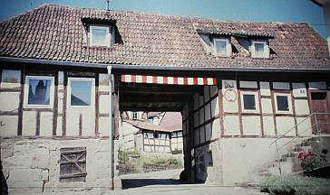
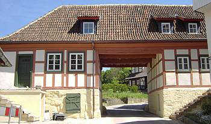

Altbau und Denkmalpflege Informationen - Startseite / Impressum
Altbau und Denkmalpflege Informationen - Startseite / ImpressumInhaltsverzeichnis - Sitemap - über 1.500 Druckseiten unabhängige Bauinformationen
e-freetranslation - Online-Translator in many languages
Alles auf CD +++ Bauberatung für Jedermann
 Wärmedämmung?
Wärmedämmung?
 Feuchte?
Feuchte?
 Heizung?
Heizung?
 Schimmelpilz?
Schimmelpilz?Kostengünstiges Instandsetzen von Burgen, Schlössern, Herrenhäusern, Villen - Ratgeber zu Kauf, Finanzierung, Planung (PDF eBook)
Altbauten kostengünstig sanieren: Heiße Tipps gegen Sanierpfusch im bestimmt frechsten Baubuch aller Zeiten (PDF eBook + Druckversion)

WTA-Sanierputz pro & kontra kontrovers - Schwindel oder Heilt er? 1
 Inhaltsübersicht (Bild links: Doppelter Sanierputzschaden):
Inhaltsübersicht (Bild links: Doppelter Sanierputzschaden):Seite 1 - Sanierputz - Was kann er, was nicht? Heilt er?
2 Sanierputze am Altbau: 1. Was sind Sanierputze? 2. Was bringen Salzanalysen? 3. Nehmen Sanierputzporen Salz auf?
3 Sanierputze am Altbau: 4. Begünstigen Sanierputze die Austrocknung des Mauerwerwerks? 5. Entsprechen die Sanierputze gem. WTA dem WTA-Merkblatt 2-2-91, Sanierputze?
4 Sanierputze am Altbau: 6. Vermindern Sanierputze die Salzbelastung? 7. Welche Anstriche sind auf Sanierputzen geeignet?
5 Gewährleistung, abplatzende Sanierputzschollen, Landkarten-Putzrisse und Ettringgittreiben / Treibmineralien
6 Bauschaden duch Sanierputzversagen auf feuchtem und salzigem Untergrund - Gutachtenauszug 1 - Vorbemerkung und Schadensanalyse
8 Gutachtenauszug 3 - Sanierputz - ein Opferputz-System?
9 Gutachtenauszug 4 - Sanierputz-Risse
10 Gutachtenauszug 5 - Feuchtemessung
11 Gutachtenauszug 6 - Sanierungsempfehlung
Einführung zur Problemlage rund um feuchte Wände, nasse Keller, Grotten und Tropfsteinhöhlen
Sie sind ein Besitzer nasser und salziger Wände? Ausblühendes Sockelmauerwerk, naßgeschwitzte Kellergewölbe, tropfig versalzte Kellerände, ehemalige Stallmauern, von denen der Putz- und Fugmörtel inklusive der bröckeligen Steinoberflächen pfundweise rieselt und bröselt? Oder sind Sie Planer oder gar Handwerker und wollen wissen, wie man solchen Problemchen beikommt? Dafür würden Sie sich sogar ein, zwei Sekunden Ihrer wertvollen Lebenszeit opfern und was lesen? Ja gibt's denn sowas? Na, dann - herzlich willkommen auf dieser Seite! Hier geht es genau darum.Freilich, es gibt auch genau Entgegengesetztes zu dem, was Sie hier finden werden. Leider haben es sich ja manche Baustoffproduzenten zur Aufgabe gemacht, mit manipulierten Informationen umsatzfördernden Irrglauben an teure/überteuerte/schädliche Baustoffe zu verbreiten. Eines der vielen Beispiele dafür ist der umfangreiche Schwindel, der mit der Bauphysik getrieben wird: Die passende Lektüre für eine umfassende und kontroverse Aufklärung dazu:
Prof. Dr.-Ing. habil. Claus Meier: Richtig bauen. Bauphysik im Widerstreit + Mythos Bauphysik ==>
Der Gipfel des korrumpierenden Chemiewaffen-Produktplacements auf dem heißumkämpften Saniermarkt sind aber, neben den vielen herstellerkorrumpierten Experten (alle leicht erkennbar an ihren Gutachten- bzw. Ausschreibungstexten, in denen der das Neutralitätsverbot kraß mißachtende Begriff "Produkt XY-Hersteller oder gleichwertig" Standard ist) unter falscher Flagge, die inzwischen teils sogar herstellerseits unter dem Titel "XY Fachplanung GmbH" frech und herstellerabhängig, oder unter wunderlichen Tarnbegriffen daherstolzierenden doktorierten oder sogar professorierten Chemiemuffi-Planungsabteilungen, die nicht nur wie selbstverständlich ausschließlich auf die Chemie-Wunderwaffen ihres Mutterunternehmens hinarbeitenden Untersuchungen des geschädigten Bestands, sondern teilweise auch alle weiteren Planungsschritte gem. HOAI - selbstverständlich nicht zu deren Konditionen!, am Markt offen feilbieten. Das Billighonorar wird dann mit den krassen Chemiewaffenpreisen dicke aufgespeckt. Fast schon rührend ehrlich, wenn derlei "Fachplaner" unter dem Markennamen firmieren. Derlei Beschiß ist bei allen untreuen öffentlichen und kirchlichen Baubeamten - jeglichem Neutralitäsgebot offen! hohnsprechend - seit jeher am beliebtesten - man schaue nur mal die beachtenswerten Referenzen an. Lieb Gewissen, lieb Rechnungshof, magst ruhig sein!
Als beliebter Trick der Sanierputzverkäufer und Ihrer bezahlten Werbeapostel im Tarnkleid des Fachautors oder Fachjournalisten hat sich seit langem folgendes Vorgehen eingebürgert:
Man sieht eine nasse und meist mit Schadsalzrändern, gar Salzausblühungen geschmückte Wand, die den Hausbesitzer schon lange plagt. Aha, das könnte ja auch hygroskopische Feuchte - Wandfeuchte als Ergebnis der Luftfeuchteaufnahme von Schadsalzen - sein, nicht unbedingt "Aufsteigende Feuchte". Hier müssen wir erst mal eine (gleich mitverkaufte, oder dank irrer Gewinnmargen beim folgenden Geschäftle ganz und gar "umsonstige") "Analyse der bauschädlichen Salze" machen! Und da die Sanierputztypen ganz genau wissen, daß es aufsteigende Feuchte in Mauerwerkkonstruktionen doch gar nicht gibt, weil es sie eben aus einleuchtendsten physikalischen Gründen gar nicht geben kann, ist das Ergebnis vorprogrammiert:
Man findet eine dolle Belastung mit "bauschädlichen Salzen", bewertet die anhand der sog. WTA-Tabelle - "Ogottchen! Is da aber schee viel Nitrat drinne!" - und empfiehlt als vergleichsweise beste Sanierungsmöglichkeit die Anwendung eines Sanierputzsystems (neuerdings schlauerweise nicht ohne die Alternative eines zwar insgesamt nicht ganz so stabilen und leider, leider auch oft von feuchten Flecken geschmückten "Kompressenputzes" (unhydrophoberter Putz mit durch chemische Porenbildner erreichten großen Gesamtporosität (> 60 %) und hoher Salzeinlagerung-Kapazität) anzusprechen. Anstelle eines auch sehr guten, aber eben - leider, leider (wenn Mauerwerk/Ziegelwand vorher eben nicht ordentlich entsalzt) bald abfallenden (pflegebdürftigen!) Kalkputzes. Ja, die Kenntnis so vieler Alternativen, geschickt ins Spiel gebracht und abwertend kommentiert, zeichnet den GROSSEN EXPERTEN eben aus.
Wenn so ein rechter (eher linker!) Profi aber riecht, daß der Bauherr, geblendet durch die große Schlauheit des Beraters, vielleicht sogar durch seine Doktortitel, und seine eigene Dumpfsinnigkeit, kommt der Keksperte zum auch sehr beliebten I-Tüpfelchen:
Teil 2 Teil 3 Teil 4 Teil 5
Doch was steckt eigentlich hinter den Begriffsverwirrungen zum Thema Heil- bzw. Sanierputz? Hier geht's zur Sache:
Ein etwas ergänztes Artikelchen, das ich mal für "Selbst ist der Mann - Das Heimwerker Magazin" geschrieben habe, kann vielleicht auch Ihnen nützlich sein:
Sanierputz - Heilt er?
Sanierputz gilt als Opferschicht zur Trockenlegung und Salzaufnahme auf nassen, salzigen Wänden. In seine hydrophoben Poren dringt jedoch weder Feuchte noch Salzlösung, da sie Wasser abweisen. H.G. Meier, ein renommierter Sanierputzentwickler, schreibt in "Sanierputz", expert verlag, folglich dazu in aller notwendigen Offenheit: "Sanierputze dienen deshalb primär weder für eine Entsalzung noch für eine Entfeuchtung von Mauerwerken". Sie sind also Sperrputze. Im rißgefährdeten, schadsalzhaltigem Zement-Sanierputz entstehen bei sulfatbelastetem Mauerwerk voluminöse Treibmineralien. Die Putzschicht reißt dann ab.Auf wasserabweisendem Sanierputz haftet nur kunstharzhaltige und kapillarsperrende Beschichtung: Dispersionssilikat- (sog. "Mineralfarbe"), Siliconharzemulsionsfarbe, Lotuseffekt-Anstriche oder Dispersionsfarbe. Darunter trocknet die Wand und das in Risse und als Kondensat eingedrungene Porenwasser schlecht kapillar aus. Dampfdiffusion spielt da keine Rolle. Bekannte Folgen: Auffeuchtung des Bauwerks, abplatzende Putz- und Anstrichschwarten.
Aus meiner Altbaupraxis empfehle ich kalkgetünchten Luftkalkputz. Dann trocknet Wasser ungehindert nach außen ab, 10mal schneller als aus Zementmörtel! Er besitzt keine treibmineral-, ausblüh- und rißfördernde Schadsalze wie Zement, Traß oder Hydraulkalk. Richtig verarbeitet und in frostfreier Periode abgebunden bietet die Luftkalktechnik für altes Mauerwerk oft die schonendste Lösung. Da Wasser und Salzlösung aus dem Untergrund in Kalkmörtel ungehindert eindringen, ist er auch als Opferputz effektiver. Und deutlich billiger. Wobei man auch mit einfachsten Bordmitteln wie Lehmkompressen oder sonstige Salzaustreibtechniken die Schadsalze im Untergrund vermindern kann.
Wie hier z.B:

.
"Graatzer Torhaus" in Marktzeuln vor (2003) und nach (2005) Sanierung mit traditioneller und preisgünstigster Bautechnik / Schadsalzverminderung durch Kompressentechnik
(Kalkmörtel und -tünchen innen und außen, inkl. Dachdeckermörtel, Holz-Massivdämmtechnik im Dachausbau, Leinöl-Standölanstriche auf Holz, Hüllflächentemperierung.)
Die stein- und fugmörtelzerstörende Streusalzbelastung an den Sockelwänden der Tordurchfahrt haben wir mit einer Kompressenechnik erst mal so weit vermindern können, daß die nachfolgende Kalktünche abbinden konnte.
Wobei der Erfolg natürlich auch davon abhängt, daß nicht ständig neue Schadsalzbelastung - z.B. Streusalz - von außen wieder in die Wand eingetragen wird.
Preisfrage: Warum eigentlich verkaufen fast alle Farbproduzenten kunstharzhaltig kapillartrocknungsblockierende "Dispersions-Silikatfarbe" und nicht nur rein mineralische, echt kunstharzfreie "Silikatfarbe", "Kalkfarbe" und "Kalk-Weißzementfarbe" als "Mineralfarbe"? Wieviel Wortbetrug und Begriffsverwirrung muß denn sein, um Chemiemüll an den Mann zu bringen? Manche beziehen sich in ihrer Produktwerbung sogar auf die VOB/C DIN 18363, Abs. 2.4.1, in der alle Anstrichsysteme für mineralische Untergründe und ihre zugelassenen Inhaltsstoffe fein säuberlich begriffsdefiniert sind. Natürlich ohne die darin eindeutig definierten wahren Begriffe zu verwenden. Das ist Beschiß, meine ich.
Krachende Schwarten? Ein kritischer Blick auf Mörtel, Putz und Anstriche am Baudenkmal (Beitrag in "Bauhandwerk")
Die häufigsten Fehler bei der Anwendung von Luftkalkmörtel, Kalkputz und Kalkanstrich
Zur aktuellen Vergütungspraxis bei Luftkalkmörteln Mineralische Putze und Anstriche im Bestand
Interessante Putzprobleme und -befunde in Venedig
Baustoffseite Aufsteigende Feuchte?
Das Handwerkerquiz + Das Planerquiz für schlaue Bauherrn
Gegengutachten - auch zum "Sanier"-Putz
Interview m. K. Fischer: Österreich Online: R. Kanfer: Sanierputz - hält er, was er verspricht?
Sind Sie Opfer von Trockenlegungsfirmen - hat Ihr Gutachter Aufsteigende Feuchte diagnostiziert? Rätseln Sie, welches der teuren Trockenlegungs- / Entfeuchtungs- / Sanierungs-Angebote das richtige ist?
Dieser Aufklärungs-Knüller hilft bestimmt etwas weiter:
Wissenschaftsbetrug der Bauchemie und Geräteindustrie, Geschäftemacherei der Planerluschen, Schlechtachter, Schwachverständigen sowie der Nepper, Schlepper, Bauernfänger und Handwerkspfuscher mit "Aufsteigender Feuchte (engl.: Rising Damp)", Ursachen und Sanierung feuchter Wände:
Jeff Howell: The Rising Damp Myth
(Rezension in Deutsch)
Sonstige Nützlichkeiten und andere Meinungen für feuchte, nasse, abgesoffene, verschimmelte, verpilzte und vermorschte Häuser - soweit es nicht um nutzlose Horizontalisolierung gegen "aufsteigende Feuchte" geht, der manche industrieabhängige bzw. ahnungslose Autoren (wer es ist, verrate ich nicht, ätsch!) - anhängen. Reihenfolge der Titel beinhaltet keinerlei Wertung!!!:
Altbau und Denkmalpflege Informationen Startseite